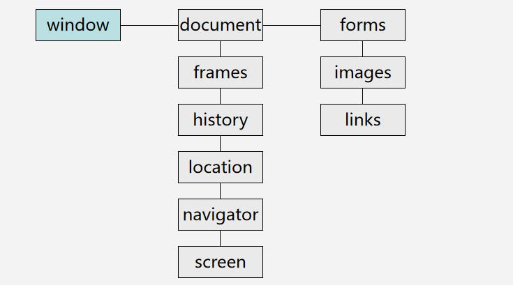

BOM对象模型
浏览器有许多内置对象，例如：document、loaction、history、navigator等，前面三个是常用的
loaction
跳转到新的URL
loncation.assign("http://www.baidu.com")
window.location="http://www.baidu.com"
location.href="http://www.baidu.com"
设置或改变URL的部分值
url="http://es6.ruanyifeng.com/"
location.hash()
location.hash="#section1";
=> "http://es6.ruanyifeng.com/#section1"
location.search 查询字符串
location.search="?setion1";
=> "http://es6.ruanyifeng.com/?setion1"
location.hostname 服务器名称
location.hostname="www.yahoo.com";
服务器名称就变成 "http:www.yahoo.com"
location.pathname 文件路径
location.pathname="mydir";
=>"http://es6.ruanyifeng.com/mydir"
location.port 端口号
location.port=8080 //无需双引号；
=>"http://es6.ruanyifeng.com:8080/mydir"
location.replace()
location.replace("http://www.baidu.com");
=>"http://www.baidu.com" 跳到新页面，用户无法后退，不能回到前一个页面
location.reload()；//重新加载（有可能从缓存中加载）
location.reload(true)；//重新加载（页面所有内容重新从服务器获取）；
History对象
navigator对象
appCodeName
返回浏览器的代码名
appName
返回浏览器的名称
appVersion
返回浏览器的平台和版本信息
cookieEnabled
返回指明浏览器中是否启用 cookie 的布尔值
platform
返回运行浏览器的操作系统平台
userAgent
返回由客户机发送服务器的user-agent 头部的值